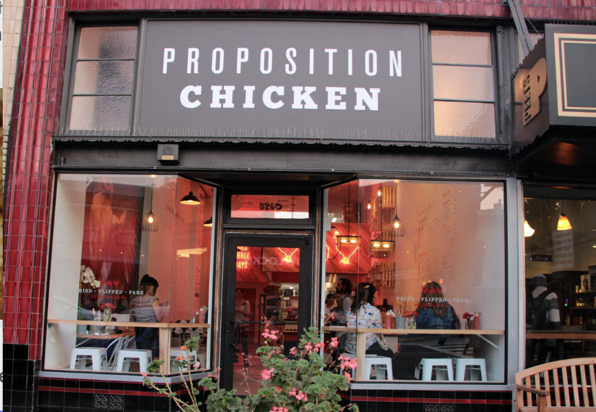
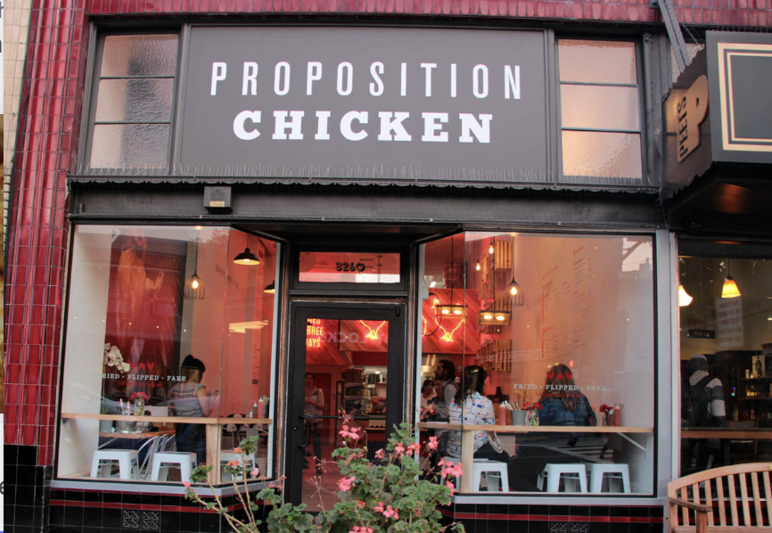

Proposition Chicken was founded in 2013 by Ari Feingold, a TV competition-winning chef. Proposition Chicken is widely known and loved around many places in the Bay Area. This successful company has become particularly well known for serving chicken three ways: Fried, Flipped, and Fake. In addition to these popular styles, they also serve various sides, salads, and sauces that will be explained further in the “Best Menu Items” section.
 
